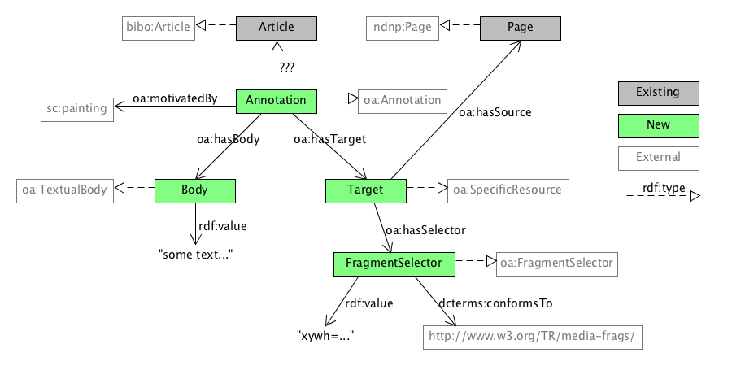
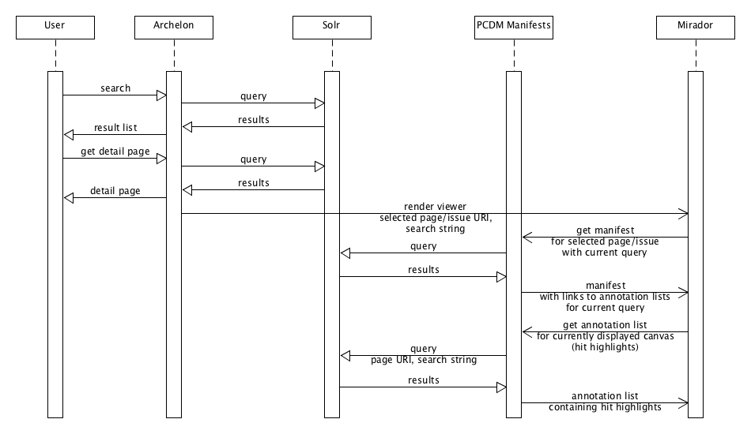
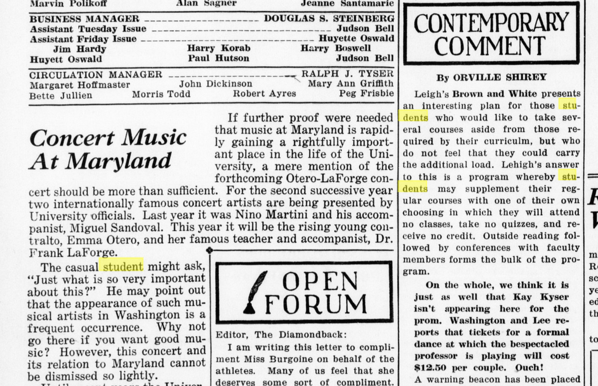

<> a oa:Annotation ;
oa:motivatedBy sc:painting ;
oa:hasBody [
a oa:TextualBody ;
rdf:value """HON.|2556,2906,120,66 RICHARD|2706,2906,211,66 YATES|2946,2906,151,66
ADDRESSES|2698,2997,283,66 STUDENTS|3016,3000,254,63""" ;
dcterms:format "text/plain"
] ;
oa:hasTarget [
a oa:SpecificResource ;
oa:hasSource </pcdm/3b/74/68/30/3b746830-ddc6-423e-860d-076cc7b2ab26> ;
oa:hasSelector [
a oa:FragmentSelector ;
rdf:value "xywh=2553,2902,717,161" ;
dcterms:conformsTo <http://www.w3.org/TR/media-frags/>
]
] ;
# provenance information can be added to show how this annotation was created
prov:wasDerivedFrom [
a oa:SpecificResource ;
# ALTO XML file
oa:hasSource </pcdm/d1/0b/b0/2f/d10bb02f-9672-4b84-b477-c01f6580db45> ;
# the particular alto:TextBlock element
oa:hasSelector [
a oa:XPathSelector ;
rdf:value "//*[@ID='P3_TB00030']"
]
] .Use Solr token payloads to store word bounding boxes
word|x,y,w,h
token=word
payload=x,y,w,hhyphen|x1,y1,w1,w2\N{SOFT HYPHEN}ated|x2,y2,w2,h2
token=hyphenated
payload=x1,y1,w1,h1+x2,y2,w2,h2highlighting section of Solr results
Query: "student"
